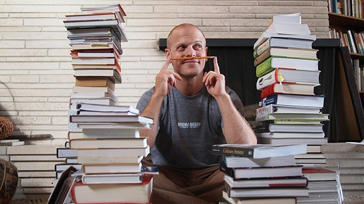

Si has llegado aquí sin saber quien es Tim Ferriss, déjame contarte rápido quien es y por qué deberías leer sus libros.
Timothy Ferriss ha sido listado por la revista Fast Company como una de las personas de negocio más innovadoras, y uno de los 40 Under 40 de la revista Fortune. Tim ha sido inversionista y consejero en etapas tempranas de empresas que ahora son enormes como Facebook, Alibaba, Uber, Shopify y Duolingo.
En sus libros, blog y podcast nos cuenta en conjunto de grandes íconos de los negocios, deportes, arte y tecnología del gran paquete de herramientas y experiencias que ellos han adquirido durante toda su vida para que tú puedas escoger los que necesites para darle un giro exponencial a tu vida o a esa idea que tienes en tu cabeza.
Conoce la filosofía, historias y herramientas de Tim y sus Titanes sobre cómo evolucionó y creó su fortuna dejando a un lado trabajo para el que no era el mejor creando nuevas oportunidades y delegándolas.
Por ahora te contaré de los 3 libros que estamos rifando: The 4-Hour Workweek, The 4-Hour Body y Tools of Titans. Por cierto, todos son #1 New York Times Bestseller. 😉
Esta es una guía paso a paso para emprender el camino de los nuevos ricos para que comiences a delegar tus tareas a personas en otros lados del mundo, a crear negocios online y a entender que la base de la economía que importa se basa en el tiempo y la regla 80/20.
Este es un gamechanger. Tim, además de ser inversionista y rico, es un gran atleta que lleva su cuerpo al máximo. En The 4-Hour Body conocerás tips para perder peso rápido y sin tanto dolor, y si quieres convertirte en un súper humano, te contará de técnicas probadas científicamente que puedes aplicar desde esfuerzos sencillos.
Finalmente, aquí te encontrarás con Tim y sus Titanes. De todas las entrevistas de todos los íconos mundiales que Tim ha entrevistado en su podcast, te dará la síntesis de los mejores consejos de las mejores preguntas. Aquí encontrarás a personalidades como Rick Rubin (productor de Shakira, Ed Sheeran, Metallica y muchos más), Pether Thiel (Cofundador de PayPal e inversionista de Facebook) y Arnold Scharzenegger (Actor, Fisicoculturista y ex–Gobernador de California).
*Todos los libros están en el idioma original del autor: inglés
El 5 de marzo se rifaron los 3 libros en un livestreaming. Te dejo el vídeo para que veas quien resultó ganador y cómo fue la rifa.
MUCHAS GRACIAS A TODAS LAS PERSONAS QUE PARTICIPARON! Pronto estaremos realizando más fifas con la comunidad de Hackers & Founders Veracruz